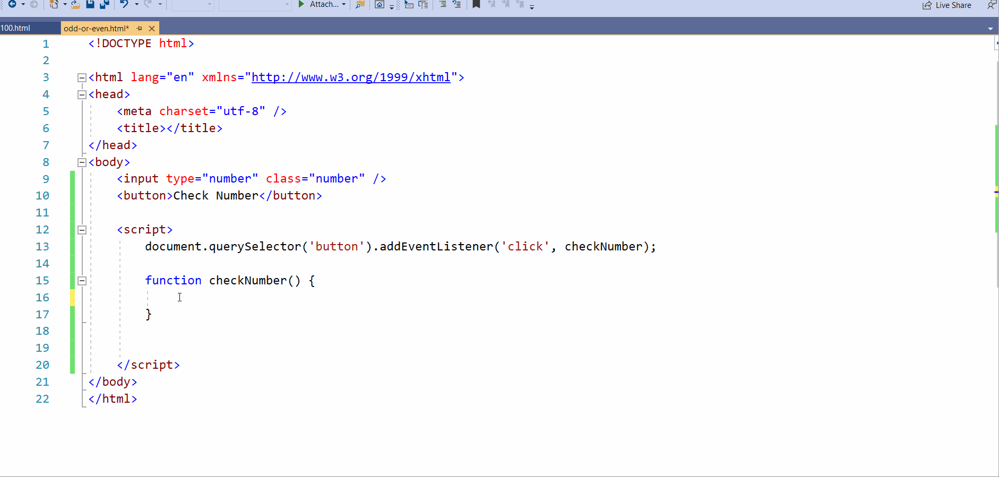

இவன் நம்பர்á? ஆடு நம்பர்á? JavaScript ப்ரோக்ராம்
இவன் நம்பர்á? ஆடு நம்பர்á? கண்டுபிடி குறத்துக்கு ஒரு சிம்பிள் JavaScript ப்ரோக்ராம் எப்படி பண்ணல னு பாக்கலாம்.
ஸ்டேப் 1: HTML எலிமெண்ட்ஸ் ரெடி பண்ணுங்க
1.இன்புட் போஸ் வெறும் நம்பர் மட்டும் ஈண்டெர் பண்ண ஆளா பண்ண நும். இது பண்றதுக்கு இன்புட் போஸ் ஓட "type" அட்ட்ரிபூட் ட நீங்க "number" னு செட் பண்ணனும். இத எப்படி பண்றது னு கீழ இருக்குற இமேஜ் ல நீங்க பாக்கலாம்.
2.அடுத்ததா இன்புட் பஇக்சு JavaScript வழிய செலக்ட் பண்றதுக்கு அதுக்கு ஒரு class கொடுங்க. அந்த class'கு பெரு "name" னு கொடுங்க.
3.கடைசியா ஒரு பட்டன் கிரேட் பண்ணுங்க, அதுக்கு "Check Number" னு பெரு கொடுங்க

4.HTML பைலை save பண்ணிட்டு ஓங்க browser'ல ஓபன் பண்ணி பாருங்க. நீங்க கிரேட் பண்ண பயில் இமேஜ் ல கட்டுன மாதிரி இருக்கணும்
Important : இப்போதைக்கு உங்க HTML எலிமெண்ட்ஸ் வேறு எலிமெண்ட்ஸ் டான். லாஜிக் JavaScript வழிய டான் எலுதா முடியும்.
ஸ்டேப் 2: பட்டன்னுக்கு JavaScript EventListener அட்பண்ணுங்க
Important : இப்போதைக்கு உங்க HTML எலிமெண்ட்ஸ் வேறு எலிமெண்ட்ஸ் டான். லாஜிக் JavaScript வழிய டான் எலுதா முடியும்.
யூசர் என்தர் பண்ற நம்பர் வாங்கணும் இல்லையா? அதுக்கு டான் EventListener ஆட்டுபண்றோம். Event listener'ஆ எப்படி அட் பண்ணல கேழே இர்ருக்குற படத்துல நீங்க பாக்கலாம்

Event Listener ஆட் பண்றதுக்கு நீங்க பண்ணவேண்டிய ஸ்டெப்ஸ்:
1.document.querySelector() method யூசு பண்ணி பட்டன JavaScript வழிய செலக்ட் பண்ணுங்க
2.அடுத்ததாக addEventListener() method யூஸ் பண்ணி பாட்டனுக்கு EventListener அடு பண்ணுங்க
3.EventListener அட் பண்ணும்போது 2 விசயங்களை நீங்க பண்ணனும்
ஒன்று, எந்த மாதிரியான event ட அட் பண்ண பொன்கிறீங்ககுருத்து முடிவு செய்யணும் .நம்ம பட்டன் (button) ஓட டீல் பன்றதனால event கிளிக் (click) event'டாக தான் இருக்கும்.
இரண்டு, click event நடக்கும் பொது, யூசர் இன்டர் பண்ற நம்பர் ஆட இல்ல இவன் ந னு கண்டுபுடிக்குற லாஜிக் ஒரு JS function ல எழுதணும்
Important :இப்போதைக்கு function வெறும் 'checking number...' என்கிற மெசேஜ் டிஸ்பிலே பண்ணுகிறது. இதை பின்னர் 'நம்பர் அட இல்ல இவானா' செக் பண்ணற மாதிரி மாற்றலாம்
ஸ்டேப் 3 : யூசர் இன்டர் பண்ற நம்பர்á வாங்குறது
Important :யூசர் இன்புட் பக்ஸ் ல இன்டர் பண்ற நம்பர்á document.querySelector() method யூஸ் பண்ணி வாங்கி, அதை ஒரு JS variable ல ஸ்டார் பண்ணுங்க. JS variable யூசர் இன்புட்டா கரெக்ட்டா ஸ்டார் பன்னீர்க்க இல்லையா என்று நீங்க கேழே இறக்கும் படத்துல கட்டுனமாதிரி ஒரு அலெர்ட் மெசேஜ் யூஸ் பண்ணி செக் பன்னிகுள.

ஸ்டேப் 4 : Modulus Operator (%) யூஸ் பண்ணி நம்பர் அட இல்ல இவன்á னு கடுபிடிக்குறது
JavaScript Modulus operator (%) 2 நும்பேர்கள் divide பண்ணும்போது வரக்கூடிய ரிமைண்டர் அ return பண்ணும். இதை யூஸ் பண்ணி நம்பர் இவன்á இல்ல அட னு கண்டுபிடிச்சல. அதுபோக நம்ம கிட்ட 2 கண்டிஷன்கல் இருக்கு. யூசர் இன்டர் பண்ற நம்பர் இவன்á இருக்கல இல்ல அட இருக்கல. சோ இதை ஹண்ட்லே பண்ண, நம்ம Modulus Operator(%) ரா if-else condition கு உள்ள யூஸ் பண்ணனும்.

சோ யூசர் இன்டர் பண்ற நம்பர் 2 ஆல divide பண்ணும்போது:
Remainder ==௦ நா, இன்டர் பண்ண நம்பர் இவன் நம்பர் ஆ இறக்கும்
Remainder != நா, இன்டர் பண்ண நம்பர் அட் நம்பர் ஆ இறக்